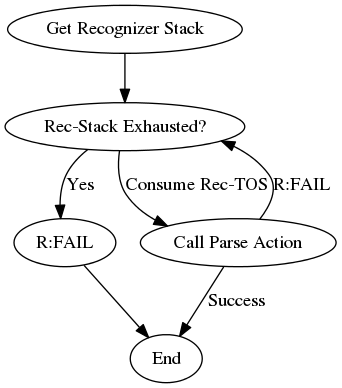
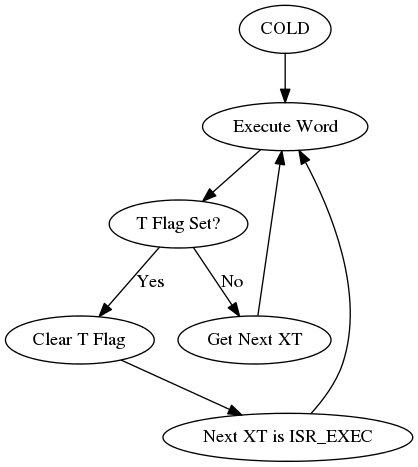

Architecture¶
Overview¶
amforth is a 16 bit Forth implementing the indirect threading model. The flash memory contains the whole dictionary. A few EEPROM cells are used to hold initial values and the dictionary pointers. The RAM contains buffers, variables and the stacks.
The compiler is a classic compiler without any optimization support.
amforth uses all of the CPU registers to hold vital data: The data stack pointer, the instruction pointer, the user pointer, and the Top-Of-Stack cell. The hardware stack is used as the return stack. Some registers are used for temporary data in primitives.
CPU – Forth VM Mapping¶
The Forth VM has a few registers that need to be mapped to the microcontroller registers. The mapping has been extended over time and may cover all available registers. The actual coverage depends on the amount of additional packages. The default settings are shown in the table Register Mapping.
Register Mapping¶
| Forth Register | ATmega Register(s) |
| W: Working Register | R22:R23 |
| IP: Instruction Pointer | XH:XL (R27:R26) |
| RSP: Return Stack Pointer | SPH:SPL |
| PSP: Parameter Stack Pointer | YH:YL (R29:R28) |
| UP: User Pointer | R4:R5 |
| TOS: Top Of Stack | R24:R25 |
| X: temporary register | ZH:ZL (R31:R30) |
Extended Forth VM Register Mapping¶
| Forth Register | ATmega Register(s) |
| A: Index and Scratch Register | R6:R7 |
| B: Index and Scratch Register | R8:R9 |
In addition the register pair R0:R1 is used internally e.g. to hold the the result of multiply operations. The register pair R2:R3 is used as the zero value in many words. These registers must never be changed.
The registers from R10 to R13 are currently unused, but may be used for the VM extended registers X and Y sometimes. The registers R14 to R21 are used as temporary registers and can be used freely within one module as temp0 to temp7.
The forth core uses the T Flag in the machine status register SREG for signalling an interrupt. Any other code must not change that bit.
Core System¶
Threading Model¶
AmForth implements the classic indirect threaded variant of forth. The registers and their mappings are shown in table Register Mapping.
Inner Interpreter¶
For the indirect threading model an inner interpreter is needed. The inner interpreter does the interrupt handling too. It repeatedly reads the cell, the IP points to, takes this number as the address for the next code segment and jumps to that code. It is expected that this code segment does a jump back to the inner interpreter (NEXT). The IP is incremented by 1 just before the jumps are done to get the next cell.
Check_Interrupt
W <- [IP] ; read at IP
IP <- IP+1 ; advance IP
X <- [W] ; EXECUTE phase, W points to execution token
JMP [X] ; read execution token and execute its code
NEXT¶
The NEXT routine is the core of the inner interpreter. It does the mapping between the execution tokens and the corresponding machine code. It consists of 4 steps which are executed for every forth word.
The first step is to check whether an interrupt needs to be handled. It is done by looking at the T flag in the machine status register. If it is set, the code jumps to the interrupt handling part.
The next step is to read the cell the IP points to and stores this value in the W register. For a COLON word W contains the address of the code field.
The 3rd step is to increase the IP register by 1.
The 4th step is the EXECUTE step.
EXECUTE¶
This operation is the JUMP. It reads the content of the cell the W register points to. The result is stored in the scratch pad register X. The data in X is the address of the machine code to be executed in the last step. This step is used by the forth command EXECUTE too. The forth command does not get the address of the next destination from the current IP but from the data stack.
This last step finally jumps to the machine code pointed to by the X scratch pad register.
DO COLON¶
DO COLON (aka NEST) is the subroutine call. It pushes the IP onto the return stack. It then increments W by one flash cell, so that it points to the body of the (colon) word, and sets IP to that value. Then it continues with NEXT, which begins executing the words in the body of the (parent) colon word. Note that W points to the execution token of the current word, so W+1 points to the parameter field (body) of the forth word.
push IP
IP <- W+1
JMP NEXT
EXIT¶
The code for EXIT (aka UNNEST) is the return from a subroutine. It is defined in the forth word EXIT in the dictionary. It reads the IP from the return stack and jumps to NEXT. The return stack pointer is incremented by 2 (1 flash cell).
pop IP
JMP NEXT
Text Interpreter¶
The interpreter is a line based command interpreter. It based upon REFILL to acquire the next line of characters, located at a position SOURCE points to. While processing the line, the pointer >IN is adjusted accordingly. Both words REFILL and SOURCE are USER based deferred words which allows to use any input source on a thread specific level. The interpreter itself does not use any static buffers or variables (>IN is a USER variable as well).
A given string is handled by INTERPRET which splits it into whitespace delimited words. Every word is processed using a list of recognizers. Processing ends either when the string end is reached or an exception occurs.
SOURCE and REFILL¶
SOURCE provides an addr/len string pair that does not change during processing. The task of REFILL is to fill the string buffer, SOURCE points to when finished.
There is one default input source: The terminal input buffer. This buffer gets filled with REFILL-TIB that reads from the serial input buffers (KEY). SOURCE points to the Terminal Input Buffer itself. Another input source are plain strings, used by EVALUATE.
Recognizer¶
Recognizer are a part of the text (command) interpreter. They are responsible for analyzing a single word. The result consists of two elements: The actual data (if any) and an object like identifier connected with certain methods.
![digraph Recognizer {
"Interpret" -> "Get Next Word"
"Get Next Word" -> "Do Recognizer" [label="Got one"]
"Get Next Word" -> "End" [label="No More Words"];
"Do Recognizer" -> "Check State"
"Check State" -> "Compile" [label="Compile"];
"Check State" -> "Execute" [label="Interpret"];
"Compile" -> "Get Next Word"
"Execute" -> "Get Next Word"
}](../_images/graphviz-12d12a66d46c841ad7d7793d8e958748c4a646d5.png)
The Forth text interpreter reads from the input source and splits it into whitespace delimited words. Each word is fed into a list of actions which parse it. If the parsing is successful (e.g. it is a number or a word from the dictionary) the recognizer leaves the data and an method table to deal with it. Depending on the interpreter state one of the methods is executed to finally process the data. The first method is called in interpreter state. It is usually a noop, since the recognizer has done all the work already.
The 2nd method is responsible to perform the compile time semantics. That usually means to write it into the dictioanary or to execute immediate words.
The third method is used by :command`postpone` to compile the compilation semantics. It honors the immediate flags as well.
Do Recognizer is an iteration over the recognizer stack until the first parsing methods returns something different than r:fail. If the recognizer stack is exhausted without a match, the r:fail return value is generated. The string location that is passed to the parse actions is preserved and is restored for every iteration cycle.
A recognizer consists of a few words that work together. To ease maintenance, a naming convention is used: The recognizer itself is named with the prefix rec:. The method table name gets the prefix r: followed by the same name as the recognizer.
Recognizer List¶
The interpreter uses a list of recognizers. They are managed with the words get-recognizers and set-recognizers.
\ place a recognizer as the last one
: place-rec ( xt -- )
get-recognizers 1+ set-recognizers
;
' rec:foo place-rec
The entries in the list are called in order until the first one returns a different result but r:fail. If the list is exhausted and no one succeeds, the r:fail is delivered nevertheless and leads to the error reactions.
The standard recognizer list is defined as follows
: default-recs
['] rec:intnum ['] rec:find
2 set-recognizers
;
The standard word marker resets the recognizer list as well.
INTERPRET¶
The interpreter is responsible to split the source into words and to call the recognizers. It also maintains the state.
: interpret
begin
parse-name ?dup if drop exit then
do-recognizer ( addr len -- i*x r:table )
state @ if 1+ then \ get compile time action
@i execute ?stack
again
;
do-recognizer always returns a valid method table. If no recognizer succeeds, the r:fail is returned with the addr/len of the unknown-to-handle word.
API¶
Every recognizer has a method table for methods to handle the data inside the forth interpreter and a word to parse a word.
\ order is important!
:noname ... ; \ interpret action
:noname ... ; \ compile action
:noname ... ; \ postpone action
recognizer: r:foo
: rec:foo ( addr len -- i*x r:foo | r:fail ) ... ;
The word rec:foo is the actual recognizer. It analyzes the string it gets. There are two results possible: Either the word is recognized and the address of the method table is returned or a failure information is generated which is actually a predefined method table named r:fail.
The calling parameters to rec:foo are the address and the length of a word in RAM. The recognizer must not change it. The result (i*x) is the parsed and converted data and the method table to deal with it.
There is a standard method table that does not require additional data (i*x is empty) and which is used to communicate the “not-recognized” information: r:fail. Its method table entries throw the exception -13 if called.
Other pre-defined method tables are r:intnum to deal with single cell numeric data, r:intdnum to work with double cell numerics and r:find to execute, compile and postpone execution tokens from the dictionary.
The words in the method tables get the output of the recognizer as input on the data stack. They are excpected to consume them during their work.
Default (Fail)¶
This is a special system level recognizer. It is never called, its method table (r:fail) is used as both a error flag and for the final error actions. Its methods get the addr/len of a single word. They consume it by printing the string and throwing an exception when called. The effect is to get back to the command prompt if catched inside the quit loop.
:noname type -13 throw ; dup dup
recognizer: r:fail
\ this definition is never used actually
: rec:fail ( addr len -- r:fail)
2drop r:fail
;
NUMBER¶
The number recognizer identifies numeric data in both single and double precision. Depending on the actual data width, two different methods tables are returned.
The postpone action follows the standard definitions with not allowing to postpone numbers. Instead the number is printed and an exception is thrown.
' noop
' literal
:noname . -48 throw ;
recognizer: r:num
' noop
' 2literal
:noname d. -48 throw ;
recognizer: r:dnum
: rec:intnum ( addr len -- n r:num | d r:dnum | r:fail )
number if
1 = if r:num then
r:dnum
else
r:fail
then
;
FIND¶
This recognizer tries to find the word in the dictionary. If sucessful, the execution token and the flags are returned. The method table contains words to execute and correctly deal with immediate words for compiling and postponing.
( XT flags -- )
:noname drop execute ;
:noname 0> if compile, else execute then ;
:noname 0> if postpone [compile] then , ;
recognizer: r:word
: rec:find ( addr len -- XT flags r:word | r:fail )
find-name ?dup if
r:word
else
r:fail
then
;
Stacks¶
Data Stack¶
The data stack uses the CPU register pair YH:YL as its data pointer. The Top-Of-Stack element (TOS) is in a register pair. Compared to a straight forward implementation this approach saves code space and gives higher execution speed (approx 10-20%). Saving even more stack elements does not really provide a greater benefit (much more code and only little speed enhancements).
The data stack starts at a configurable distance below the return stack (RAMEND) and grows downward.
Return Stack¶
The Return Stack is the hardware stack of the controller. It is managed with push/pop assembler instructions. The default return stack starts at RAMEND and grows downward.
Interrupts¶
Amforth routes the low level interrupts into the forth inner interpreter. The inner interpreter switches the execution to a predefined word if an interrupt occurs. When that word finishes execution, the interrupted word is continued. The interrupt handlers are completely normal forth colon words without any stack effect. They do not get interrupted themselves.
The processing of interrupts takes place in two steps: The first one is the low level part. It is called whenever an interrupt occurs. The code is the same for all interrupts. It takes the number of the interrupt from its vector address and stores this in a RAM cell. Then the low level ISR sets the T flag in the status register of the controller and returns with RET.
The second step does the inner interpreter. It checks the T-flag every time it is entered and, if it is set, it switches to interrupt handling at forth level. This approach has a penalty of 1 CPU cycle for checking and skipping the branch instruction to the isr forth code if no interrupt occurred.
If an interrupt is detected, the forth VM clears the T-flag and continues with the word ISR-EXEC. This word reads the currently active interrupt number and calls the associated execution token. When this word is finished, the word ISR-END is called. This word clears the interrupt flag for the controller (RETI).
This interrupt processing has two advantages: There are no lost interrupts (the controller itself disables interrupts within interrupts and re-transmits newly discovered interrupts afterwards) and it is possible to use standard forth words to deal with any kind of interrupts.
Interrupts from some hardware sources (e.g. the usart) need to be cleared from the Interrupt Service Routine. If this is not done within the ISR, the interrupt is re-triggered immediately after the ISR returned control.
The downside is a relatively long latency since the the forth VM has to be synchronized with the interrupt handling code in order to use normal colon words as ISR. This penalty is usually small since only words in assembly can cause the delay.

Multitasking¶
amforth does not implement multitasking directly. It provides the basic functionality however. Within IO words the deferred word PAUSE is called whenever possible. This word is initialized to do nothing (NOOP).
Exceptions¶
Amforth uses and supports exceptions as specified in the ANS wordset. It provides the CATCH and THROW commands. The outermost catch frame is located at the interpreter level in the word QUIT. If an exception with a negative value is catched, QUIT will print a message with this number and and re-start itself. Positive values silently restart QUIT.
The next table lists the exceptions, amforth uses itself.
| Exception | Meaning | Thrown in |
| -1 | silent abort | ABORT |
| -2 | abort with message | ABORT” |
| -4 | stack underflow | ?STACK |
| -13 | undefined word | rec-notfound, tick |
| -16 | Invalid word | (create) |
| -50 | search order exhausted | PREVIOUS |
User Area¶
The User Area is a special RAM storage area. It contains the USER variables and the User deferred definitions. Access is based upon the value of the user pointer UP. It can be changed with the word UP! and read with UP@ . The UP itself is stored in a register pair.
The size of the user area is determined by the size the system itself uses plus a configurable number at compile time. For self defined tasks this user supplied number can be changed for task local variables.
The first USER area is located at the first data address (usually RAMSTART).
| Address offset (bytes) | Purpose |
| 0 | Multitasker Status |
| 2 | Multitasker Follower |
| 4 | RP0 |
| 6 | SP0 |
| 8 | SP (used by multitasker) |
| 10 | HANDLER (exception handling) |
| 12 | BASE (number conversion) |
| 14 | EMIT (deferred) |
| 16 | EMIT? (deferred) |
| 18 | KEY (deferred) |
| 20 | KEY? (deferred) |
| 22 | SOURCE (deferred) |
| 24 | >IN |
| 26 | REFILL (deferred) |
The User Area is used to provide task local information. Without an active multitasker it contains the starting values for the stackpointers, the deferred words for terminal IO, the BASE variable and the exception handler.
The multitasker uses the first 2 cells to store the status and the link to the next entry in the task list. In that situation the user area is/can be seen as the task control block.
Beginning with release 3.7 the USER area has been split into two parts. The first one called system user area contains all the variables described above. The second one is the application user area that contains all variables defined with the USER command. The default application user area is empty and by default of size zero.
Word Lists and Environment Queries¶
Word lists and environment queries are implemented using the same structure. The word list identifier is a EEPROM address that holds the name field address of the first word in the word list.
Environment queries are normal colon words. They are called within environment? and leave there results at the data stack.
find-name (und find for counted strings) uses an array of word list identifiers to search for the word. This list can be accessed with get-order as well.
Wordlist Header¶
Wordlists are implemented as a single linked list. The list entry consists of 4 elements:
- Name Field (NF) (variable length, at least 2 flash cells).
- Link Field (LF) (1 flash cell), points to the NFA of the next element.
- Execution Token (XT) (1 flash cell)
- Parameter Field (Body) (variable length)
The wording is some mixture of old style fig-forth and the more modern variants. The order makes it possible to implement the list iterators (search-wordlist and show-wordlist) is a straight forward way.
The name field itself is a structure containing the flags, the length information in the first flash cell and the characters of the word name in a packed format afterwards.
The anchor of any wordlist points to the name field address of the first element. The last element has a zero link field content. The lists are created from lower addresses to higher ones, the links go from higher addresses backwards to lower ones.
Memories¶
Flash¶
The flash memory is divided into 4 sections. The first section, starting at address 0, contains the interrupt vector table for the low level interrupt handling and a character string with the name of the controller in plain text.
The 2nd section contains the low level interrupt handling routines. The interrupt handler is very closely tied to the inner interpreter. It is located near the first section to use the faster relative jump instructions.
The 3rd section is the first part of the dictionary. Nearly all colon words are located here. New words are appended to this section. This section is filled with FFFF cells when flashing the controller initially. The current write pointer is the DP pointer.
The last section is identical to the boot loader section of the ATmegas. It is also known as the NRWW area. Here is the heart of amforth: The inner interpreter and most of the words coded in assembly language.
FLASH Structure Overview¶
{kind=link}
Default Flash Structure
The reason for this split is a technical one: to work with a dictionary in flash the controller needs to write to the flash. The ATmega architecture provides a mechanism called self-programming by using a special instruction and a rather complex algorithm. This instruction only works in the boot loader/NRWW section. amforth uses this instruction in the word I!. Due to the fact that the self programming is a lot more then only a simple instruction, amforth needs most of the forth core system to achieve it. A side effect is that amforth cannot co-exist with classic boot loaders. If a particular boot loader provides an API to enable applications to call the flash write operation, amforth can be restructured to use it. Currently only very few and seldom used boot loaders exist that enable this feature.
Atmegas can have more than 64 KB Flash. This requires more than a 16 bit address, which is more than the cell size. For one type of those bigger atmegas there will be an solution with 16 bit cell size: Atmega128 Controllers. They can use the whole address range with an interpretation trick: The flash addresses are in fact not byte addresses but word addresses. Since amforth does not deal with bytes but cells it is possible to use the whole address range with a 16 bit cell. The Atmegas with 128 KBytes Flash operate slightly slower since the address interpretation needs more code to access the flash (both read and write). The source code uses assembly macros to hide the differences.
An alternative approach to place the elements in the flash shows picture . Here all code goes into the RWW section. This layout definitely needs a routine in the NRWW section that provides a cell level flash write functionality. The usual boot loaders do not have such an runtime accessible API, only the DFU boot loader from atmel found on some USB enabled controllers does.
{kind=link}
Flash Write¶
The word performing the actual flash write operation is I! (i-store). This word takes the value and the address of a single cell to be written to flash from the data stack. The address is a word address, not a byte address!
The flash write strategy follows Atmel’s appnotes. The first step is turning off all interrupts. Then the affected flash page is read into the flash page buffer. While doing the copying a check is performed whether a flash erase cycle is needed. The flash erase can be avoided if no bit is turned from 0 to 1. Only if a bit is switched from 0 to 1 must a flash page erase operation be done. In the fourth step the new flash data is written and the flash is set back to normal operation and the interrupt flag is restored. The whole process takes a few milliseconds.
This write strategy ensures that the flash has minimal flash erase cycles while extending the dictionary. In addition it keeps the forth system simple since it does not need to deal with page sizes or RAM based buffers for dictionary operations.
EEPROM¶
The built-in EEPROM contains vital dictionary pointer and other persistent data. They need only a few EEPROM cells. The remaining space is available for user programs. The easiest way to use the EEPROM is a VALUE. There intended design pattern (read often, write seldom) is like that for the typical EEPROM usage. More information about values can be found in the recipe Values.
Another use for EEPROM cells is to hold execution tokens. The default system uses this for the turnkey vector. This is an EEPROM variable that reads and executes the XT at runtime. It is based on the DEFER/IS standard. To define a deferred word in the EEPROM use the Edefer definition word. The standard word IS is used to put a new XT into it.
Low level space management is done through the the EHERE variable. This is not a forth value but a EEPROM based variable. To read the current value an @e operation must be used, changes are written back with !e. It contains the highest EEPROM address currently allocated. The name is based on the DP variable, which points to the highest dictionary address.
RAM¶
The RAM address space is divided into three sections: the first 32 addresses are the CPU registers. Above come the IO registers and extended IO registers and finally the RAM itself.
amforth needs very little RAM space for its internal data structures. The biggest part are the buffers for the terminal IO. In general RAM is managed with the words VARIABLE and ALLOT.
Forth defines a few transient buffer regions for various purposes. The most important is PAD, the scratch buffer. It is located 100 bytes above the current HERE and goes to upper addresses. The Pictured Numeric Output is just at PAD and grows downward. The word WORD uses the area above HERE as it’s buffer to store the just recognized word from SOURCE.
{kind=link}
Ram Structure
Ram Structure shows an RAM layout that can be used on systems without external RAM. All elements are located within the internal memory pool.
{kind=link}
Alternative RAM Structure
Another layout, that makes the external RAM easily available is shown in Alternative RAM Structure. Here are the stacks at the beginning of the internal RAM and the data space region. All other buffers grow directly into the external data space. From an application point of view there is not difference but a speed penalty when working with external RAM instead of internal.
With amforth all three sections can be accessed using their RAM addresses. That makes it quite easy to work with words like C@. The word ! implements a LSB byte order: The lower part of the cell is stored at the lower address.
For the RAM there is the word Rdefer which defines a deferred word, placed in RAM. As a special case there is the word Udefer , which sets up a deferred word in the user area. To put an XT into them the word IS is used. This word is smart enough to distinguish between the various Xdefer definitions.
DOES>¶
DOES> is used to change the runtime action of a word that create has already defined.
Its working is described best using a simple example: defining a constant. The standard word constant does exactly the same.
> : con create , does> @i ;
ok
> 42 con answer
ok
> answer .
42 ok
The first command creates a new command con. With it a new word gets defined, in this example answer. con calls create, that parses the source buffer and creates a wordlist entry answer. After that, within con the top-of-stack element (42) is compiled into the newly defined word. The does> changes the runtime of the newly defined word answer to the code that follows does>.
does> is an immediate word. That means, it is not compiled into the new word (con) but executed. This compile time action creates a small data structure similar to the wordlist entry for a noname: word. The address of this data structure is an execution token. This execution token replaces the standard XT that create has already written for words that are defined using con. This leads inevitably to a flash erase cycle.